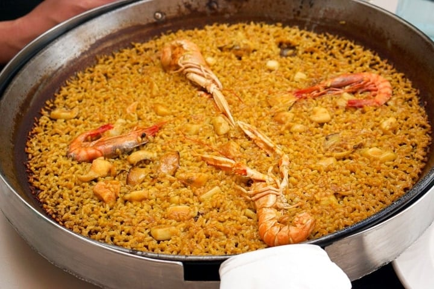

Paella

A delicious dish bringing the heart of Spain to your table
There is no dish more famous than this Spanish seafood paella.
Fortunately, it’s easier than you might think to make this mouthwatering dish from scratch in under an hour!
Ingredients
- 1/3 Cup of Olive Oil
- 1 Onion finely sliced
- 2 cloves of garlic minced
- 2 medium tomatoes finely diced
- 3 cups of seafood stock
- 1.5 tsp of paprika (pimenton)
- A pinch of saffron threads
- 2 large squid cleaned
- 2 cups of short grain rice (Bomba is a good brand!)
- 1 cup of white wine
- 12 Prawns
- 12 Mussels
Instructions
- Bring the white wine and seafood stock to a simmer in a large saucepan over high heat.
Add a pinch of saffron threads and keep gently simmering over low heat.
- Put a large, shallow frying pan (such as a 10-inch cast iron skillet or 16-inch paella) over medium-high heat and add the olive oil.
When hot, add the onion to the pan and sauté until translucent, stirring frequently.
- Add the garlic and cook until fragrant, about 1-2 minutes. Before it starts to brown, stir in the tomato, paprika, and a pinch of salt.
Continue to cook, stirring occasionally, until the tomatoes are reduced and the oil is sizzling.
- Gently add the squid to the pan and stir to coat in the tomato mixture. Sauté for about a minute to give some color to the squid.
- Next, stir in the rice and cook for 1 minute, then spread the rice evenly across the pan. If it looks like a thin layer, don't worry; it will puff up as it absorbs the liquid.
- Pour in the simmering wine mixture all at once, then reduce the heat to low, and cook, without stirring, for 10 minutes. Carefully lay the prawns/shrimp in a circle on top of
the rice and cook for a further 10 minutes, turning the shrimp over as they start to turn pink. If the rice starts to dry out before the shrimp is cooked, you can top it up with a bit
more hot stock, half a cup at a time.
- Meanwhile, steam the mussels. Place them in a half-inch of simmering water in a large skillet with a tight-fitting lid. They are cooked when the shells open; be sure to discard any that stay closed.
Once the mussels are cooked, arrange them decoratively on the paella.
- When the stock in the paella fully evaporates, you will hear a faint crackling from the bottom of the pan as the socarrat starts to form. If you don't hear anything, you can raise the heat to medium for a short burst.
- Remove the paella from the heat and cover it with a tea towel for 3 minutes to let it rest. Uncover and serve from the pan with lemon wedges on the side.
Return to Homepage